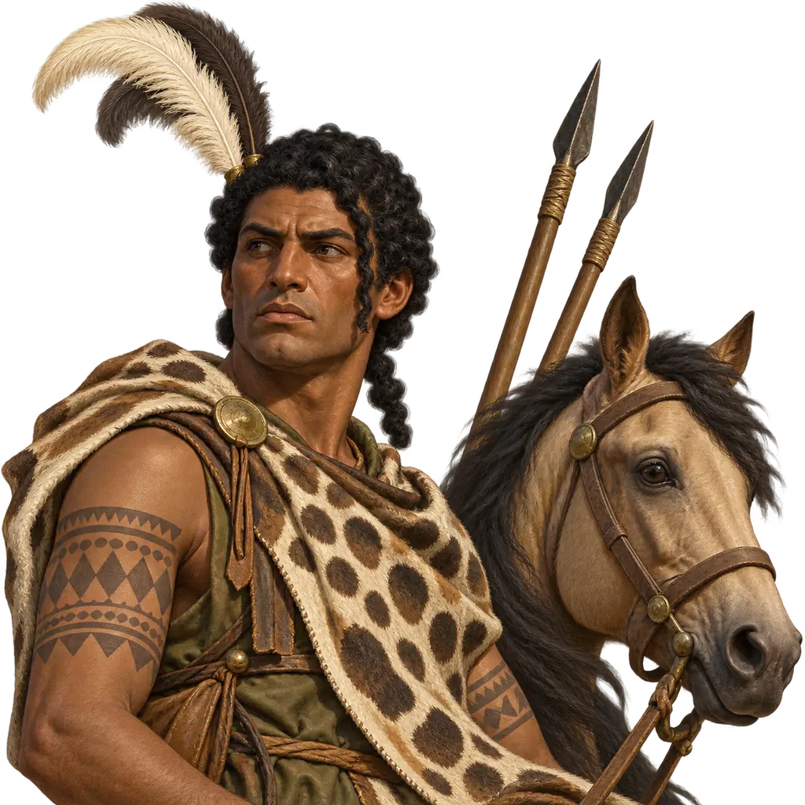
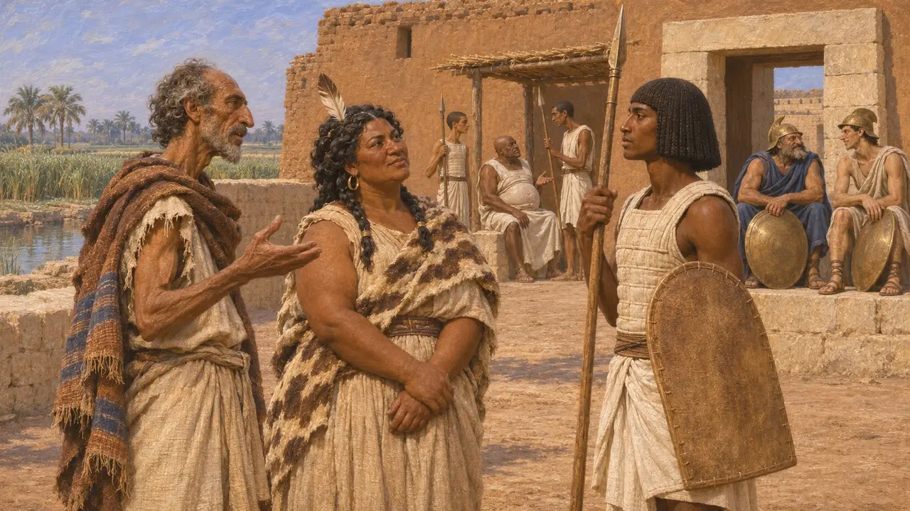
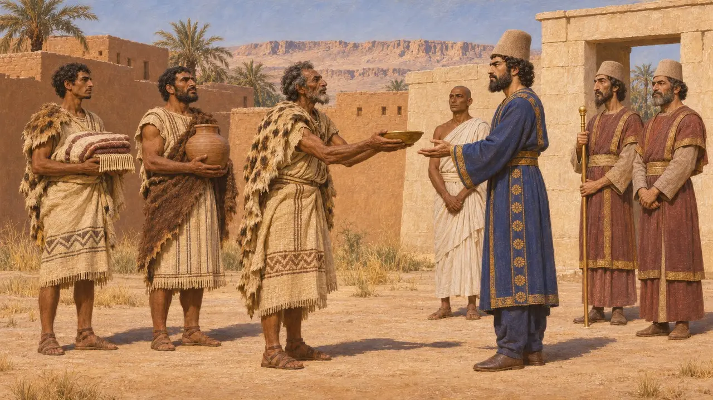
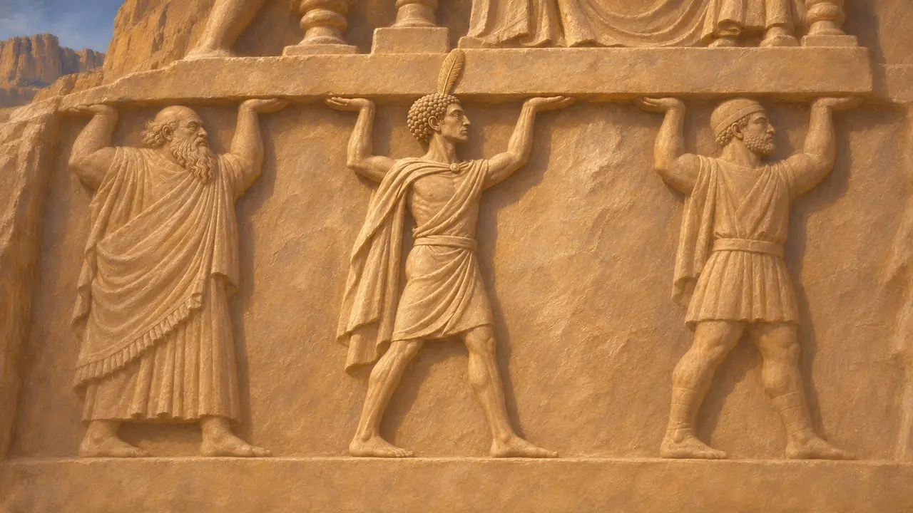
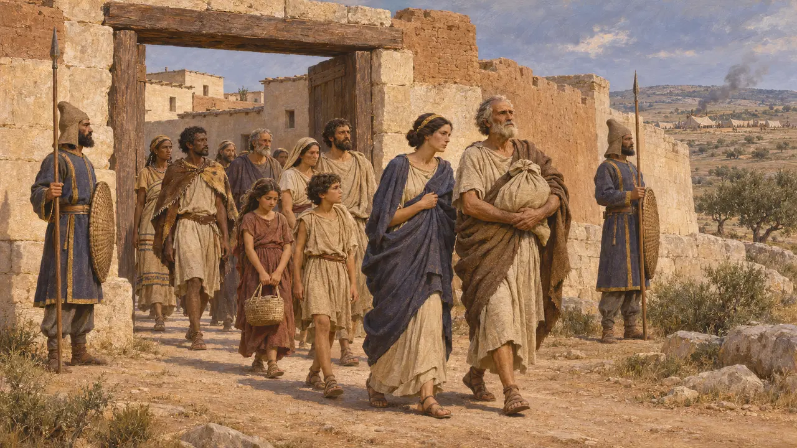
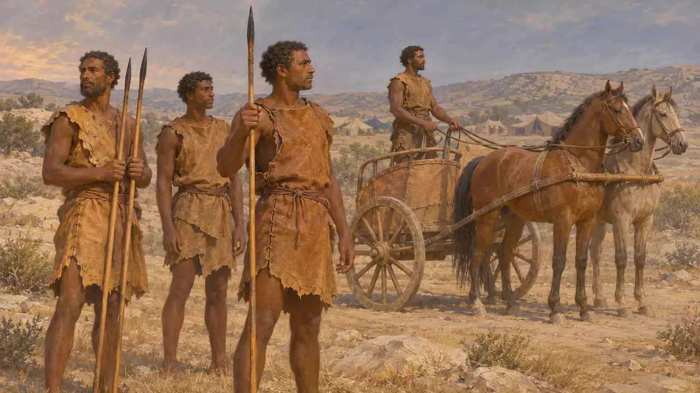

I Libi
Popoli a ovest dell'Egitto che si sottomisero alla Persia, dal 525 a.C.
Nel gioco: Livello 2: Il Portalancia
I Greci chiamavano Libi i popoli autoctoni dell'Africa settentrionale a ovest dell'Egitto. Erodoto descrive quelli stanziati tra l'Egitto e il lago Tritonide come nomadi pastori, con popoli agricoltori più a occidente. Dopo che Cambise ebbe preso l'Egitto nel 525 a.C., i Libi più vicini all'Egitto si sottomisero senza combattere, e in seguito i re persiani annoverarono la Libia, che chiamavano Putaya, tra le loro terre.
Nel gioco: Il gioco colloca cavalleggeri libici nell'esercito di Psammetico a Menfi. Nessuna fonte antica lo attesta. Erodoto racconta che i Libi confinanti con l'Egitto si sottomisero a Cambise senza combattere, una volta caduta Menfi.

I Libici e l'esercito di Psammetico III
ContesoI Libici vivevano e servivano in Egitto da lungo tempo, e alcuni faraoni precedenti erano di origine libica. Alcuni storici ritengono che anche parte della casta ereditaria dei guerrieri descritta da Erodoto avesse radici libiche. Eppure il racconto di Erodoto sulla guerra del 525 a.C. nomina gli Egizi con mercenari greci e cari e non menziona alcun contingente libico. Non si sa se qualche Libico abbia combattuto per Psammetico III, e nessuna fonte menziona cavalieri libici.
Herodotus 2.164-166; Herodotus 3.11; P. Briant, From Cyrus to Alexander, 2002

La sottomissione a Cambise
Racconto anticoErodoto racconta che, dopo la resa di Menfi nel 525 a.C., i Libici confinanti con l'Egitto temettero la stessa sorte. Si consegnarono senza combattere, accettarono di pagare tributo e inviarono doni, e i Greci di Cirene e di Barca seguirono il loro esempio. Nel suo elenco dei distretti fiscali di Dario, Erodoto colloca questi Libici in un'unica provincia con l'Egitto, Cirene e Barca, che versava 700 talenti d'argento all'anno.
Herodotus 3.13; Herodotus 3.91

Putaya nelle iscrizioni reali
Nelle fontiI testi persiani chiamano questa terra Putaya. Manca nell'elenco delle terre dell'iscrizione di Behistun, ma compare in elenchi successivi, tra cui l'iscrizione della tomba di Dario a Naqsh-e Rostam e la lista delle terre soggette di Serse. Sulla facciata della tomba di Dario, una figura libica è raffigurata tra i popoli che sorreggono il trono del Re.
DB §6; DNa §3; XPh

La spedizione contro Barce
Racconto anticoErodoto narra come Ariande, governatore persiano dell'Egitto, inviò verso occidente un esercito e una flotta all'epoca della campagna scitica di Dario. Il motivo dichiarato era punire Barca per l'uccisione di Arcesilao III di Cirene, che vi si era rifugiato. Erodoto riteneva che il vero scopo fosse sottomettere i numerosi popoli libici ancora estranei al dominio del Re. Barca cadde dopo un assedio di nove mesi e molti dei suoi abitanti furono deportati in Battriana.
Herodotus 4.145; Herodotus 4.164-167; Herodotus 4.200-204

I Libici nell'esercito di Serse
Racconto anticoNel suo catalogo dell'esercito che Serse condusse in Grecia nel 480 a.C., Erodoto descrive i Libi vestiti di cuoio e armati di giavellotti induriti al fuoco. Il loro comandante era Massage figlio di Oarizo. Aggiunge che i Libi servivano tra le forze montate come conducenti di carri. La cifra che fornisce per l'intero esercito è assai esagerata, e non colloca i Libi in alcuna battaglia precisa.
Herodotus 7.71; Herodotus 7.86
Fonti
- Herodotus, Histories, books 2, 3, 4 and 7
- Darius, tomb inscription at Naqsh-e Rostam (DNa)
- Darius, Behistun inscription (DB)
- Xerxes, inscription from Persepolis (XPh)
- P. Briant, From Cyrus to Alexander, 2002
- A. Kuhrt, The Persian Empire: A Corpus of Sources, 2007